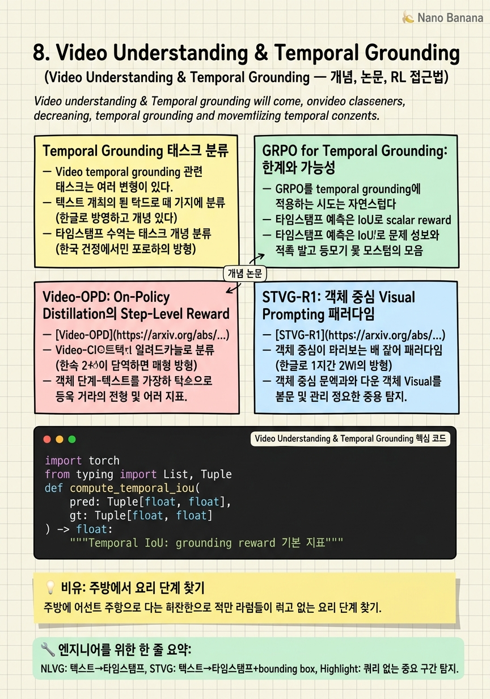

Video Understanding & Temporal Grounding

🎯 학습 목표
- Temporal grounding, moment retrieval, STVG의 차이를 설명할 수 있다
- Video-OPD가 GRPO 대비 더 효과적인 이유를 step-level reward density 관점에서 설명할 수 있다
- STVG-R1의 instance-level identification 패러다임이 coordinate prediction을 어떻게 대체하는지 설명할 수 있다
- QVHighlights, Charades-STA, ActivityNet-Captions 벤치마크의 특성과 평가 지표를 설명할 수 있다
- 비디오 grounding 모델에서 발생하는 주요 실패 패턴을 설명할 수 있다
Video temporal grounding은 '이 이벤트가 비디오에서 언제 발생하는가'를 특정하는 태스크다. 이 능력은 비디오 검색, 하이라이트 생성, 비디오 QA, 액션 인식 등 다양한 응용의 기반이 된다. VLM이 단순히 비디오를 '이해'하는 것을 넘어 시간 축에서 정밀하게 추론하는 능력을 갖추는 것이 목표다.
2025-2026년에는 temporal grounding을 위한 post-training에 두 가지 주요 패러다임이 등장했다. 첫째, Video-OPD(February 2026, [arxiv 2602.02994](https://arxiv.org/abs/2602.02994)): teacher VLM으로부터 on-policy distillation으로 step-level reward를 제공하는 방법. 둘째, STVG-R1(February 2026, [arxiv 2602.11730](https://arxiv.org/abs/2602.11730)): 객체에 시간적으로 일관된 ID를 부여하고 visual prompt로 삽입하여 좌표 예측 문제를 ID 식별 문제로 전환하는 방법.
이 두 방법은 모두 기존 GRPO 기반 접근법의 한계 — scalar reward가 모든 토큰에 균등 적용되어 step-level credit assignment가 어렵다는 문제 — 를 다른 방식으로 해결한다.
핵심 내용
Temporal Grounding 태스크 분류
Video temporal grounding 관련 태스크는 여러 변형이 있다. 면접에서 이를 혼동하지 않도록 명확히 구분해야 한다.
Natural Language Video Grounding (NLVG): 텍스트 쿼리가 주어졌을 때 비디오에서 해당 moment의 시작/종료 타임스탬프를 예측. 예: '사람이 박수를 치는 시간 구간' - 평가 지표: R@1 IoU (Recall at IoU threshold), mIoU - 대표 벤치마크: Charades-STA, QVHighlights, ActivityNet-Captions
Spatial-Temporal Video Grounding (STVG): 텍스트로 설명된 특정 객체가 비디오의 어느 프레임, 어느 공간 위치에 있는지 예측. 즉, 시간(타임스탬프) + 공간(bounding box)를 동시에 예측.
- 평가 지표: vIoU (volume IoU: temporal × spatial), mAP - 더 어려운 태스크: 시간과 공간을 동시에 예측해야 함
Video Highlight Detection: 비디오에서 중요한 구간을 탐지. 특정 쿼리 없이 비디오 자체의 흥미도 추정.
- 평가 지표: mAP, HIT@1
Dense Video Captioning: 비디오의 여러 이벤트를 순차적으로 탐지하고 각 이벤트를 텍스트로 설명. Moment retrieval + captioning 결합.
GRPO for Temporal Grounding: 한계와 가능성
GRPO를 temporal grounding에 적용하는 시도는 자연스럽다 — 타임스탬프 예측은 IoU로 scalar reward를 계산할 수 있는 verifiable task이기 때문이다.
GRPO temporal grounding reward 설계:
`python
def grounding_reward(predicted, ground_truth, video_duration):
pred_start, pred_end = predicted
gt_start, gt_end = ground_truth
# Temporal IoU 계산
intersection = max(0, min(pred_end, gt_end) - max(pred_start, gt_start))
union = max(pred_end, gt_end) - min(pred_start, gt_start)
return intersection / union if union > 0 else 0
`
GRPO의 문제점: 각 토큰 위치 \(t\)에 동일한 scalar reward \(r_i\)가 broadcast된다: \[\hat{A}_{i,t} = \frac{r_i - \text{mean}(r)}{\text{std}(r)}, \quad \forall t \in [1, T]\]
즉, 출력 시퀀스에서 어떤 토큰이 좋은 타임스탬프 예측에 기여했는지 구분하지 못한다. '12.5'라는 숫자를 생성한 것이 '초에서'라는 조사를 생성한 것과 동일한 credit을 받는다. 이것이 temporal grounding에서 GRPO의 학습 효율이 제한되는 이유다.
Video-OPD: On-Policy Distillation의 Step-Level Reward
[Video-OPD](https://arxiv.org/abs/2602.02994)(February 2026)는 on-policy distillation로 이 문제를 해결한다. Teacher VLM(더 큰 모델 또는 더 잘 훈련된 모델)이 student policy의 생성에 step-by-step으로 토큰 레벨의 가이던스를 제공한다.
Key insight: GRPO는 \(T\) 토큰 시퀀스에 scalar reward 1개, Video-OPD는 \(T\)개의 distinct step-level reward를 제공한다.
수식으로 표현: - GRPO: \(\hat{A}_{i,t} = f(r_i)\), \(r_i\)는 scalar - Video-OPD: \(\hat{A}_{i,t} = f(r_{i,t})\), \(r_{i,t}\)는 토큰별 step reward
Step reward는 teacher VLM의 token log probability와 student policy의 token log probability 비율로 근사된다: \[r_{i,t} = \log \frac{\pi_{teacher}(a_t | s_t)}{\pi_{student}(a_t | s_t)}\]
결과: QVHighlights R@0.7에서 Video-OPD 50.4 vs GRPO 41.5 (Qwen3-VL-8B backbone). 평균 17% 이상 개선됐다.
STVG-R1: 객체 중심 Visual Prompting 패러다임
[STVG-R1](https://arxiv.org/abs/2602.11730)(February 2026)은 근본적으로 다른 접근을 취한다. 좌표 예측 문제를 아예 회피하고, 객체에 시간적으로 일관된 식별자(ID)를 부여하는 방식으로 전환한다.
기존 접근법의 문제: VLM이 'x=123, y=456' 같은 좌표를 직접 예측하는 것은 어렵다. 좌표는 연속 값이고 cross-modal alignment(텍스트와 픽셀 좌표 간 매핑)가 필요하기 때문이다.
STVG-R1 해결책: 비디오의 각 객체에 '객체 1', '객체 2' 같은 고유 ID를 부여하고 이 ID 마커를 시각적으로 각 프레임에 overlaid한다. 모델은 '사람이 뛰고 있는 객체의 ID를 찾아라'라는 질문에 '객체 2'라고 답하면 된다. 좌표 예측 대신 분류 문제가 된다.
이 방식의 장점: - 좌표 alignment 문제 제거 - RL reward 설계가 단순해짐 (ID 매칭은 binary reward 가능) - Temporally consistent tracking이 자연스럽게 내재
Temporal Grounding 벤치마크와 평가
주요 temporal grounding 벤치마크:
Charades-STA - 약 9.8K clips, 16K annotations - Action-focused: 일상적 실내 활동 - 평가: R@1/R@5 at IoU=0.5, 0.7
QVHighlights - 약 10K moment-query pairs - Highlight detection + grounding 동시 평가 - 평가: mAP, HIT@1, R@1 IoU@0.5/0.7
ActivityNet-Captions - 약 100K moment annotations, 평균 비디오 길이 ~3분 - 복잡한 활동, 다양한 도메인 - 평가: R@1/R@5 at IoU=0.5
평가 지표 이해:
- R@1 IoU@0.7: 예측 구간이 정답 구간과 IoU≥0.7인 경우의 Recall. 더 엄격한 기준.
- mIoU: 전체 테스트 셋의 평균 IoU. 전반적 정확도 지표.
- Video-OPD의 QVHighlights R@0.7 50.4는 이 엄격한 기준에서의 성능이다.
💡 비유로 이해하기
Temporal grounding은 '이 레시피 비디오에서 마늘을 볶는 단계가 몇 분 몇 초인가?'를 찾는 것과 같다. GRPO는 전체 비디오를 다 보고 나서 '마늘을 잘 볶았다/못 볶았다'는 평가를 받는 것과 같다 — 어느 순간에 무엇을 잘못했는지 알기 어렵다.
Video-OPD는 요리 전문가(teacher)가 옆에서 실시간으로 '지금 이 동작이 좋다', '지금 이 동작은 나쁘다'를 알려주는 방식이다. 토큰별 step-level feedback이 있기 때문에 모델이 어떤 부분에서 무엇을 개선해야 하는지 훨씬 명확하다.
STVG-R1은 요리 영상의 모든 재료에 색상 스티커를 붙이고 '파란 스티커가 붙은 재료가 처음 등장하는 순간을 찾아라'라고 바꾸는 방식이다. 정확한 시간을 직접 예측하는 것보다 스티커를 인식하는 것이 훨씬 쉽다.
💻 코드 예시
Temporal grounding을 위한 IoU-based reward 계산과 GRPO 적용 예시다. Video-OPD와 GRPO의 advantage 계산 차이를 개념적으로 보여준다.
import torch
from typing import List, Tuple
def compute_temporal_iou(
pred: Tuple[float, float],
gt: Tuple[float, float]
) -> float:
"""Temporal IoU: grounding reward 기본 지표"""
inter = max(0, min(pred[1], gt[1]) - max(pred[0], gt[0]))
union = max(pred[1], gt[1]) - min(pred[0], gt[0])
return inter / union if union > 0 else 0.0
def parse_timestamp_from_response(text: str) -> Tuple[float, float]:
"""응답에서 타임스탬프 파싱: '[12.5, 24.8]' 형식 처리"""
import re
pattern = r"\[(\d+\.?\d*),\s*(\d+\.?\d*)\]"
match = re.search(pattern, text)
if match:
return float(match.group(1)), float(match.group(2))
return None
def grpo_temporal_reward(responses: List[str], gt: Tuple, **kwargs) -> List[float]:
"""GRPO reward: 그룹 내 scalar IoU (모든 토큰에 동일 적용)"""
rewards = []
for resp in responses:
parsed = parse_timestamp_from_response(resp)
if parsed:
iou = compute_temporal_iou(parsed, gt)
else:
iou = 0.0 # 파싱 실패 = 0 reward
rewards.append(iou)
return rewards
# 멀티 reward: IoU + 포맷 준수 + CoT 품질
def composite_reward(response: str, gt: Tuple) -> float:
parsed = parse_timestamp_from_response(response)
format_bonus = 0.1 if parsed else 0.0 # 포맷 준수
cot_bonus = 0.1 if "<think>" in response else 0.0 # CoT 포함
iou_score = compute_temporal_iou(parsed, gt) if parsed else 0.0
return iou_score + format_bonus + cot_bonus
# 사용 예시
gt = (12.5, 24.8) # ground truth 타임스탬프
responses = [
"<think>영상 초반에 사람이 달리기 시작</think>타임스탬프: [11.0, 25.0]",
"타임스탬프: [12.0, 26.0]",
"이 비디오에는 해당 이벤트가 없습니다.",
"타임스탬프: [12.5, 24.8]", # 완벽한 예측
]
for r in responses:
score = composite_reward(r, gt)
parsed = parse_timestamp_from_response(r)
iou = compute_temporal_iou(parsed, gt) if parsed else 0
print(f"IoU={iou:.3f} | score={score:.3f} | {r[:40]}...")compute_temporal_iou는 intersection / union으로 예측 구간과 정답 구간의 시간 overlap을 측정한다. composite_reward는 IoU 외에 포맷 준수(타임스탬프 형식)와 CoT(think 태그) 포함 여부에 bonus를 추가하여 다양한 학습 신호를 제공한다. 실제 GRPO 훈련에서는 이 reward를 그룹 내 정규화하여 advantage로 사용한다.
🏭 현업에서의 평가
✅ 시니어가 보는 것
- Temporal grounding 태스크 변형(NLVG vs STVG vs highlight detection)을 명확히 구분하는 능력
- IoU 기반 reward의 한계(임계값, gradient 불연속성)를 설명하는 능력
- Video-OPD의 step-level reward가 GRPO와 다른 이유를 구체적으로 설명하는 능력
- Negative sample(이벤트 없는 비디오)이 왜 필수인지 실험 경험에 기반한 설명
⚠️ 레드 플래그
- R@1 IoU@0.7과 mIoU를 혼동하는 경우
- GRPO reward를 step-level로 바꾸면 자동으로 Video-OPD가 된다고 생각하는 경우 (distillation 메커니즘 미이해)
- STVG-R1의 장점이 단순히 '쉬운 방식'이라고 설명하는 경우 (cross-modal alignment 문제 해결 미인식)
🎤 예상 인터뷰 질문
- GRPO로 temporal grounding을 훈련할 때 reward hacking으로 '항상 전체 비디오 구간을 출력'하는 패턴이 생겼다면 어떻게 해결하겠나요?
- Charades-STA R@1 IoU@0.7 50%와 70%의 실제 품질 차이를 직관적으로 설명해주세요.
- STVG-R1의 instance ID 방식이 좌표 예측보다 더 쉽다는 것을 cross-modal alignment 관점에서 설명해주세요.
✨ 핵심 요약
NLVG vs STVG vs Highlight Detection 구분
NLVG: 텍스트→타임스탬프, STVG: 텍스트→타임스탬프+bounding box, Highlight: 쿼리 없는 중요 구간 탐지.
GRPO의 scalar reward는 temporal에 비효율
모든 토큰에 동일 reward를 broadcast하여 어떤 토큰이 정확한 타임스탬프에 기여했는지 학습이 어렵다.
Video-OPD: T개의 step-level reward
Teacher VLM distillation으로 각 토큰에 독립적 reward 제공. QVHighlights R@0.7에서 GRPO(41.5) 대비 50.4 달성.
STVG-R1: 좌표 → ID로 패러다임 전환
좌표 예측의 cross-modal alignment 어려움을 피해, 객체에 temporally consistent ID를 부여하고 분류 문제로 전환.
Composite reward가 단일 IoU보다 효과적
포맷 준수 + CoT 포함 + IoU를 조합하면 모델이 정확한 형식으로 근거 있는 예측을 학습한다.
Negative sample은 필수
이벤트가 없는 비디오의 negative 응답을 포함하지 않으면 모델이 항상 타임스탬프를 출력하는 방향으로 bias된다.
QVHighlights R@0.7이 핵심 지표
IoU≥0.7이라는 엄격한 기준의 Recall. 실용적 grounding 품질을 측정하는 가장 신뢰할 수 있는 지표다.